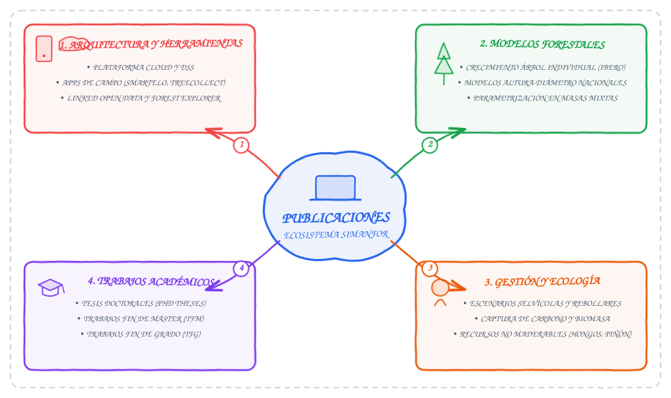

Publicaciones y referencias científicas
En esta sección se recopilan las publicaciones científicas, libros, actas de congresos y trabajos académicos directamente vinculados con el diseño, desarrollo computacional, parametrización de modelos y aplicaciones de gestión de la plataforma SIMANFOR.

Contenido
- Arquitectura y herramientas
- Modelos forestales y ecuaciones
- Gestión forestal y ecología
- Trabajos académicos
- Repositorio y descarga de referencias
Arquitectura y herramientas
Publicaciones centradas en la arquitectura computacional del motor de simulación, la plataforma en la nube, el sistema de apoyo a la decisión (DSS), las aplicaciones móviles de captura de datos en campo y la integración con datos abiertos enlazados (Linked Open Data).
- SIMANFOR (2026). Repositorio oficial de SIMANFOR en GitHub. (Enlace web)
- Vázquez-Veloso, A., Ordóñez, C. y Bravo, F. (2026). SIMANFOR: nexo entre la modelización forestal y la gestión operativa. En I Congreso de Digitalización Forestal (CIDIFOR), Burgos (Spain). (DOI: 10.13140/RG.2.2.31454.19522)
- Bravo, F. et al. (2025). SIMANFOR cloud Decision Support System: Structure, content, and applications. Ecological Modelling, 499: 110912. (DOI: 10.1016/j.ecolmodel.2024.110912)
- Bravo, F. et al. (2025). SIMANFOR: A Cloud Forest Decision Support System. En Society of American Foresters (SAF) National Convention, Hartford, CT (USA). (DOI: 10.13140/RG.2.2.17889.57443)
- Bravo, F. et al. (2025). SIMANFOR: herramienta renovada para la toma de decisiones forestales en el siglo XXI. En Actas del 9º Congreso Forestal Español, Gijón (Spain). (PDF)
- Open Foris (2025). Open Foris Arena. (Enlace web)
- Giménez-García, J. M. et al. (2024). Improving availability and utilization of forest inventory and land use map data using Linked Open Data. Frontiers in Forests and Global Change, 7. (DOI: 10.3389/ffgc.2024.1329812)
- Michalakopoulos, S. et al. (2023). SIMANFOR v.3.0. En XVIIth Young Researchers Meeting on Conservation and Sustainable use of Forest Systems, Palencia (Spain).
- Vázquez-Veloso, A. et al. (2023). SMARTELO app: an Android app to plan your harvests. En XVIIth Young Researchers Meeting on Conservation and Sustainable use of Forest Systems, Palencia (Spain). (DOI: 10.13140/RG.2.2.27928.06408)
- Vega-Gorgojo, G. et al. (2022). Pioneering easy-to-use forestry data with Forest Explorer. Semantic Web, 13(2): 147-162. (DOI: 10.3233/SW-210430)
- Rodríguez de Prado, D., Bravo, F. y Ordoñez, C. (2018). Smartelo, una herramienta informática para el cálculo, gestión y presentación de datos en parcelas forestales. En Actas del 7º Congreso Forestal Español, Plasencia (Spain). (Enlace web)
- Bravo, F. y Ordóñez, A. C. (2017). SIMANFOR: Avances y nuevas funcionalidades. En Actas del 7º Congreso Forestal Español, Plasencia (Spain). (PDF)
- Bravo, F. et al. (2017). TreeCollect. Aplicación móvil para la toma de datos forestales integrables en SIMANFOR. En Actas del 7º Congreso Forestal Español, Plasencia (Spain). (PDF)
- Bravo, F. et al. (2010). Simanfor: aplicación web para la simulación de alternativas selvícolas. Divulgación 1er. Trimestre, (100). (PDF)
- Bravo, F. et al. (2009). SIMANFOR: Herramienta libre para la simulación de sistemas selvícolas. En Actas del 5º Congreso Forestal Español, Ávila (Spain). (PDF)
Modelos forestales y ecuaciones
Artículos, libros y actas técnicas centrados en el desarrollo matemático, ajuste, calibración y validación de funciones de crecimiento, relaciones altura-diámetro y dinámica de masas puras y mixtas.
- Vázquez-Veloso, A. et al. (2025). One model to rule them all: A nationwide height–diameter model for 91 Spanish forest species. Forest Ecology and Management, 595: 122981. (DOI: 10.1016/j.foreco.2025.122981)
- Vázquez-Veloso, A. et al. (2025). Nuevas ecuaciones generalizadas de altura-diámetro para las especies forestales españolas. En Actas del 9º Congreso Forestal Español, Gijón (Spain). (PDF)
- Bravo, F. y Vázquez-Veloso, A. (2024). Mixed forest model parameterization and integration into simulation platforms as a tool for decision-making processes. En Scientific symposium: Promoting diversity in plant-based ecosystems as a tool for Ecosystem Services provision, Palencia (Spain). (DOI: 10.13140/RG.2.2.27865.94564)
- Vázquez-Veloso, A. et al. (2022). Evaluación y validación de los modelos de crecimiento forestal IBERO-PT e IBERO-PS para su implementación en SIMANFOR. En Actas del 8º Congreso Forestal Español, Lleida (Spain). (PDF)
- Bravo, F. et al. (2012). Growth and yield models in Spain: historical overview, contemporary examples and perspectives. Instituto Universitario de Investigación en Gestión Forestal sostenible (Universidad de Valladolid-INIA) y Unidad de Gestión Forestal sostenible (Universidad de Santiago de Compostela). (Enlace web)
- Bravo, F. (2005). Dinámica de rodales de pino negral (Pinus pinaster Ait.) en el Sistema Ibérico Meridional: Estructura genética, regeneración y dinámica forestal. Informe final del proyecto AGL-2001-1780.
Gestión forestal y ecología
Estudios aplicados que emplean SIMANFOR para la simulación de tratamientos selvícolas, cuantificación de la captura de carbono, biomasa forestal, provisión de servicios ecosistémicos y aprovechamiento de recursos no maderables.
- Herrero de Aza, C. et al. (2025). Create simulation and management models to predict and evaluate future scenarios of ecosystem services based on different variables and management actions. En XIXh Young Researchers Meeting on Conservation and Sustainable use of Forest Systems, Palencia (Spain).
- Mateu, R., Vázquez-Veloso, A. y Bravo, F. (2025). Management strategies for enhancing carbon sequestration in Quercus pyrenaica stands: a case study in Castilla and Leon. En XIXh Young Researchers Meeting on Conservation and Sustainable use of Forest Systems, Palencia (Spain). (Vídeo)
- Porto-Rodríguez, J. C. et al. (2025). Impacto de la gestión forestal en la productividad de bosques mixtos de Quercus pyrenaica en Castilla y León. En Actas del 9º Congreso Forestal Español, Gijón (Spain). (PDF)
- Vázquez-Veloso, A., Ordóñez, C. y Bravo, F. (2025). Evaluación de alternativas selvícolas para la conversión de rebollares a monte alto y su gestión como masas irregulares. En Actas del 9º Congreso Forestal Español, Gijón (Spain). (PDF)
- Vázquez-Veloso, A., Ordóñez, C. y Bravo, F. (2025). Silviculture alternatives evaluation for managing complex Quercus pyrenaica Willd. stands. Forest Systems, 34(3): 21005. (DOI: 10.5424/fs/2025343-21005)
- Vázquez-Veloso, A. et al. (2025). Modeling and simulation: supporting complex forest management. En XIXh Young Researchers Meeting on Conservation and Sustainable use of Forest Systems, Palencia (Spain). (Vídeo, DOI: 10.13140/RG.2.2.13936.78081)
- Vázquez-Veloso, A. et al. (2025). La modelización al servicio de la gestión forestal: de la investigación a la toma de decisiones. Salamanca (Spain). (DOI: 10.13140/RG.2.2.14673.60009)
- Vázquez-Veloso, A., Ruano, I. y Bravo, F. (2025). Trade-offs and management strategies for ecosystem services in mixed Scots pine and Maritime pine forests. European Journal of Forest Research, 144(4): 893-907. (DOI: 10.1007/s10342-024-01752-3)
- Vázquez-Veloso, A., Ordóñez, C. y Bravo, F. (2022). Simulación de la productividad de recursos no maderables (hongos y piñón) bajo diferentes escenarios selvícolas utilizando SIMANFOR. En Actas del 8º Congreso Forestal Español, Lleida (Spain). (PDF)
- de la Parra Peral, B. et al. (2017). Simulación de la productividad de setas bajo distintos escenarios selvícolas en la plataforma SIMANFOR. En Actas del 7º Congreso Forestal Español, Plasencia (Spain). (PDF)
- Martín Ariza, A., Bravo, F. y Ordóñez, A. C. (2017). Evaluación de alternativas selvícolas para el almacenamiento de carbono en los ecosistemas forestales de Pinus nigra Arnold. En Actas del 7º Congreso Forestal Español, Plasencia (Spain). (PDF)
Trabajos académicos
Tesis doctorales, Trabajos de Fin de Máster (TFM) y Trabajos de Fin de Grado (TFG) realizados por estudiantes e investigadores en el marco de proyectos vinculados a SIMANFOR.
- Vázquez-Veloso, A. (2026). Análisis de la dinámica forestal en un contexto de cambio. Tesis Doctoral, Universidad de Valladolid. (DOI: 10.13140/RG.2.2.15148.42885)
- González Manzano, J. (2025). Optimización del potencial productivo de biomasa para fines energéticos en la Sierra de Codés mediante modelización selvícola con SIMANFOR. Trabajo de Fin de Grado (TFG), Universidad de Valladolid. (Enlace web)
- Mateu Fernández, R. (2025). Análisis técnico de alternativas y propuesta selvícola para la fijación de carbono en rebollares de monte bajo en Castilla y León. Trabajo de Fin de Grado (TFG), Universidad de Valladolid.
- Gómez-Carrión, R. (2024). SIMANFOR V2: Desarrollo de una versión mejorada del portal de simulación de gestión forestal SIMANFOR. Trabajo de Fin de Grado (TFG), Universidad de Valladolid. (PDF)
- Vázquez-Veloso, A. (2021). Evaluación y validación de los modelos de crecimiento forestal IBEROPT e IBEROPS. Trabajo de Fin de Máster (TFM), Universidad de Valladolid. (PDF)
- Pascual-Arranz, A. (2012). Elaboración de un nuevo modelo selvícola de gestión en el monte Pinar Grande (Soria). Trabajo de Fin de Máster (TFM), Universidad de Valladolid.
Descarga de referencias
Descarga del archivo BibTeX
Puedes descargar directamente el archivo completo de referencias en formato BibTeX generado para esta documentación: